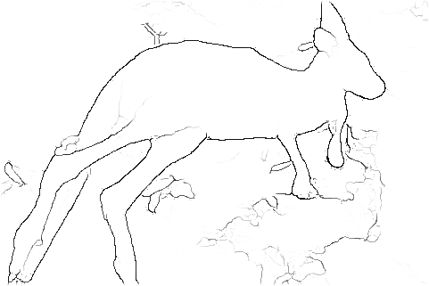

Pushing the boundaries of boundary detection using deep learning
|
Input |
CNN output |
 Thinned boundaries |
This is a preliminary release of a state-of-the-art boundary detector presented in:
Iasonas Kokkinos, “Pushing the boundaries of boundary detection using deep learning”, International Conference on Learning Representations, 2016.
Among the several variants described in the paper, the present code allows running the Multi-Resolution variant trained with VOC-Context in ‘test’ mode. The provided model has been trained with batch-normalization and has improved performance. When evaluated on the Berkeley Segmentation Dataset the model obtains an F-measure of 0.813, as opposed to 0.809 reported in the paper. We note that the F-measure of humans on this benchmark is at 0.803.
The normalised-cut variant, as well as the training code will be made available soon.
Please cite the work above if you find the code useful in your research.
This project was in turn based on the following references; please cite as well.
S. Xie and Z. Tu, Holistically Nested Edge detection, International Conference on Computer Vision, 2015.
Y. Jia, E. Shelhamer, J. Donahue, S. Karayev, J. Long, R. Girshick, S. Guadarrama and T. Darrell, Caffe: Convolutional architecture for fast feature embedding, Proceedings of the ACM International Conference on Multimedia, 2014.